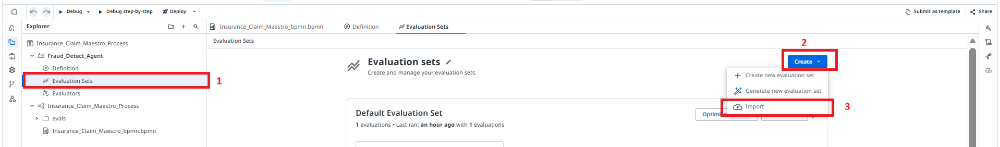
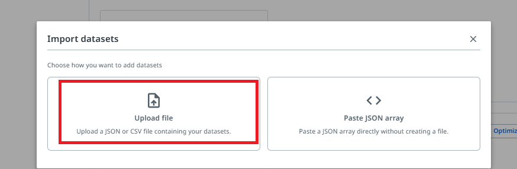
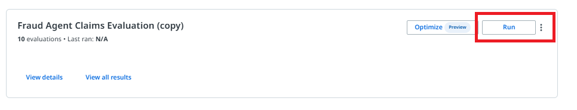
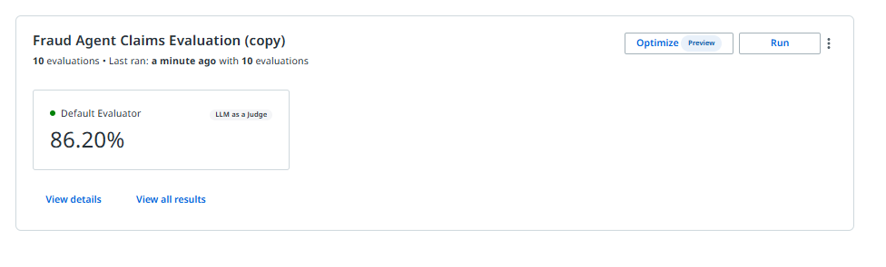

Test and Evaluate the Fraud Agent
An evaluation set runs the agent against many sample claims at once so you can check that scores, verdicts, and routing actions behave as expected before Maestro depends on it. The set provided contains 10 claims from a clean claim to a critical multi-indicator one.
Debug the agent with sample data
Before running the full evaluation set, test the agent on a single claim. In the toolbar click the Debug button.

In the Debug configuration dialog open Entrypoint arguments. (1) Switch the Input to JSON, (2) paste the sample claim below, then (3) click Save & Debug.
{
"in_ClaimData": {
"ClaimID": "3489-CLM-7040",
"PolicyNumber": "POL-2024-23489",
"CustomerName": "Priya Singh",
"ClaimAmount": 16650,
"IncidentType": "Vehicle Damage",
"IncidentDescription": "Bumper and headlight repair after collision",
"PolicyStatus": "Active",
"CoverageType": "Full",
"CoverageLimit": 167000,
"ClaimFile": {
"ID": "2fbc5935-3c1c-463b-278c-08df238e8357",
"FullName": "POL-2024-23489_Fraudulent_Active.pdf",
"MimeType": "application/pdf"
}
}
}
The agent runs and returns the four output objects (out_ClaimDetails, out_FraudAnalysis, out_SuggestedResponse, out_Status). Check that the fraud score, risk level, verdict, and routing action look sensible for this claim.
Import the evaluation set
An evaluation set is a saved list of test cases for the agent: each one is an input (here, a claim record) together with the output you expect (fraud score, risk level, verdict, recommended action). Running the set replays every case against the current agent, so you can see at a glance whether a change to the prompt, model or settings made it better or worse — instead of testing claims one by one in the debug chat.
Evaluators score each run. A Default Evaluator (LLM as a Judge) asks a model to compare the agent's actual output with the expected output and give a score; you can also add evaluators such as exact match or JSON similarity. The set's overall percentage is the average score across all cases. Evaluation is required before you put the agent into the Maestro process: it is your evidence that the agent's decisions are consistent and correct.
Download the evaluation set below. In the agent tree click Evaluation Sets, then Create → Import.

In the Import datasets dialog choose Upload file and select Fraud_Agent_Evaluation_Set.json.

Fraud_Agent_Evaluation_Set.json.Run the evaluation
The imported set appears as Fraud Agent Claims Evaluation (copy) with 10 evaluations. Click Run and review the results — compare each claim's fraud score, risk level, verdict, and routing action with what you expect.

When the run finishes, the card shows the score from each evaluator — for example Default Evaluator · LLM as a Judge · 86.20%. Click View details or View all results to see each case, where the agent differed from the expected output, and why.
